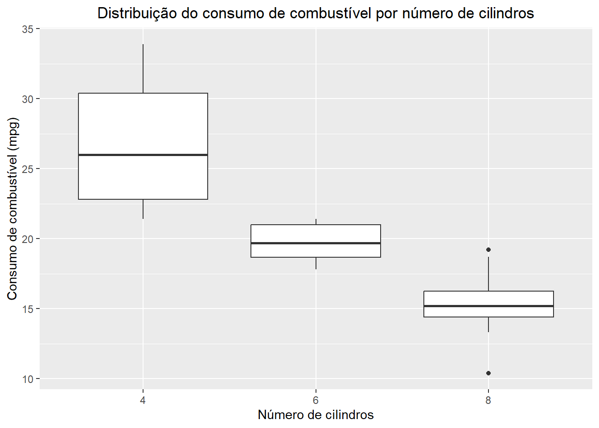
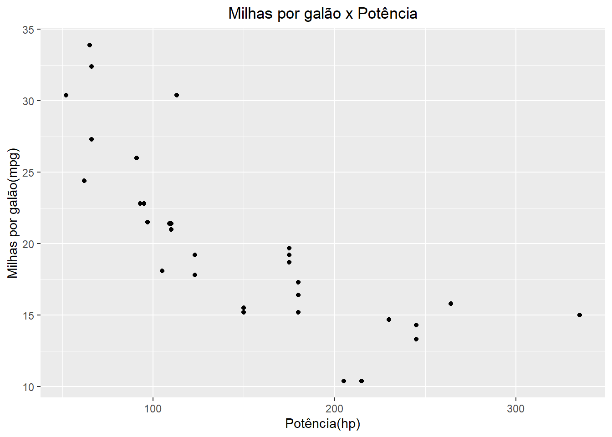

INTRODUÇÃO
A base de dados r mtcars consiste de uma planilha disponível no base r cujo os dados foram extraídos da revista Motor Trend US magazine de 1974. Os dados inseridos consistem do consumo de combustível, 10 características físicas e/ou performance de 32 automóveis (modelos de 1973-1974). A planilha do r mtcars consiste em 32 obsevações (modelo do carro) com 11 variáveis numéricas.
mpg = Milhas por galão (do inglês Miles/(US) gallon);
cyl = Número de cilindos (do inglês Number of cylinders);
disp = Deslocamento do motor (cu.in.)(do inglês Displacement);
hp = Cavalos de potência (do inglês Gross horsepower);
drat = Razão do eixo traseiro (do inglês Rear axle ratio);
wt = Peso (1000 lbs)(do inglês Weight);
qsec = Tempo para percorrer 1/4 de uma milha (do inglês 1/4 mile time);
vs = Motor (0 = V-shaped, 1 = straight)(do ingês Engine);
am = Transmissão (0 = automatic, 1 = manual)(do inglês Transmission);
gear = Número de eixos dianteiros (do inglês Number of forward gears);
carb = Número de carburadores (do inglês Number of carburetors).
Estátisticas Descritivas
Código
selected_vars <- mtcars[c("mpg", "wt", "hp", "cyl", "am")]
descriptive_stats <- selected_vars %>%
summarise_all(list(
Mean = ~mean(.),
Median = ~median(.),
Mode = ~as.numeric(names(which.max(table(.)))),
SD = ~sd(.),
Variance = ~var(.),
Range = ~max(.) - min(.),
IQR = ~IQR(.)
))
# OBS:
# summarise_all(): Essa função é usada para aplicar funções estatísticas a cada uma das colunas selecionadas.
# ~mean(.) e outras funções: A til (~) seguida de uma função estatística indica que a função deve ser aplicada à coluna atual. O ponto (.) representa a coluna sendo processada.
# Mode = ~as.numeric(names(which.max(table(.)))): O modo é calculado encontrando o valor mais frequente na coluna.Código
stats_long <- descriptive_stats %>%
pivot_longer(
cols = everything(),
names_to = "Statistic",
values_to = "Value"
) %>%
separate(Statistic, into = c("Variable", "Statistic"), sep = "_") %>%
pivot_wider(
names_from = Statistic,
values_from = Value
)
print(stats_long)# A tibble: 5 × 8
Variable Mean Median Mode SD Variance Range IQR
<chr> <dbl> <dbl> <dbl> <dbl> <dbl> <dbl> <dbl>
1 mpg 20.1 19.2 10.4 6.03 36.3 23.5 7.38
2 wt 3.22 3.32 3.44 0.978 0.957 3.91 1.03
3 hp 147. 123 110 68.6 4701. 283 83.5
4 cyl 6.19 6 8 1.79 3.19 4 4
5 am 0.406 0 0 0.499 0.249 1 1 Código
# OBS:
# pivot_longer(): Transforma o dataframe para o formato longo, onde cada linha representa uma estatística para uma variável.
# separate(): Separa a coluna 'Statistic' em duas novas colunas, 'Variable' e 'Statistic', usando o sublinhado "" como separador. Isso assume que os nomes das estatísticas foram gerados com o nome da variável seguido por "" e o nome da estatística.
# pivot_wider(): Transforma o dataframe de volta para o formato largo, onde cada linha representa uma variável e cada coluna uma estatística.Análise Estatística dos Dados do Dataset mtcars
Milhas por Galão (mpg)
- Média (Mean): 20.09 - Indica que em média, os carros percorrem 20.09 milhas por galão de combustível.
- Mediana (Median): 19.2 - Mais da metade dos carros consomem até 19.2 mpg, indicando uma distribuição relativamente centralizada em torno deste valor.
- Moda (Mode): 10.4 - O valor mais frequente de consumo é bastante baixo em comparação com a média, sugerindo a presença de outliers ou uma distribuição assimétrica.
- Desvio Padrão (SD): 6.03 - Uma variação significativa no consumo de combustível entre os carros.
- Variância (Variance): 36.32 - Reforça a observação do desvio padrão.
- Amplitude (Range): 23.5 - Uma grande variação no consumo de combustível, do mais eficiente ao menos eficiente.
- Intervalo Interquartil (IQR): 7.375 - A metade central dos dados tem uma variação menor, o que é típico de dados com outliers.
Peso (wt)
- Média: 3.22 - O peso médio dos carros é de 3.22 x 1000 lbs.
- Moda: 3.44 - O peso mais comum é de 3.44 x 1000 lbs.
- Desvio Padrão: 0.98 - Mostra uma dispersão moderada no peso dos carros.
Potência (hp)
- Média: 146.69 - Indica uma potência média elevada.
- Mediana: 123 - A metade dos carros tem uma potência abaixo de 123 hp.
- Desvio Padrão: 68.56 - Alta variação na potência dos carros, indicando uma diversidade significativa de modelos.
- Amplitude: 283 - Variação extrema, do carro menos potente ao mais potente.
Número de Cilindros (cyl)
- Moda: 8 - O número mais frequente de cilindros é 8, indicando uma prevalência de modelos mais potentes.
- Desvio Padrão: 1.79 - Relativamente pouca variação no número de cilindros, sugerindo categorias bem definidas de carros.
Transmissão (am)
- Média: 0.41 - A maioria dos carros possui transmissão automática (0).
- Moda: 0 - Confirma que a maioria dos carros no dataset tem transmissão automática.
- Amplitude: 1 - Indica a presença de ambos os tipos de transmissão, automática e manual.
Código
ggplot(mtcars, aes(x = factor(cyl))) +
geom_bar() +
labs(x = "Número de cilindros",
y = "Contagem de carros",
title = "Contagem de carros por número de cilindros") +
ylim(0, 15) +
theme(plot.title = element_text(hjust = 0.5))Código
hist(mtcars$hp)
Código
mtcars %>%
ggplot(aes(wt,mpg)) +
geom_point() +
labs(x = "Peso",
y = "Milhas por galão",
title = "Milhas por galão x Peso")+
theme(plot.title = element_text(hjust = 0.5))
Este gráfico de dispersão apresenta a relação (correlação negativa) entre o peso de um carro e sua eficiência de combustível, medida em milhas por galão (mpg). Cada ponto no gráfico representa um carro, onde o eixo horizontal representa o peso do carro e o eixo vertical representa o número de milhas que o carro pode percorrer com um galão de combustível. Observando a dispersão dos pontos, podemos visualizar como o peso de um carro pode afetar sua eficiência de combustível. Essa visualização pode ajudar a identificar tendências ou padrões na relação entre o peso e a eficiência de combustível dos carros.
Abaixo podemos ver a relação de outras variaveis como Milhas por galão(mpg) x Potência(hp) e também, no próximo gráfico a relação de Milhas por galão(mpg) x Potência (hp) por numémro de Cilindros(cyl):
Código
mtcars %>%
ggplot(aes(hp,mpg)) +
geom_point() +
labs(x = "Potência(hp)",
y = "Milhas por galão(mpg)",
title = "Milhas por galão x Potência")+
theme(plot.title = element_text(hjust = 0.5))Pode-se indentificar que a potência implica em um consumo maior de combustivel.
Código
ggplot(mtcars, aes(x = hp, y = mpg, color = factor(cyl))) +
geom_point() +
geom_smooth(method = "lm") +
labs(title = "Gráfico de Dispersão: Potência vs. Consumo de Combustível",
x = "Potência(hp)",
y = "Milhas por Galão (mpg)",
color = "Número de Cilindros") +
scale_color_manual(values = c("blue", "green", "red"))`geom_smooth()` using formula = 'y ~ x'
Aqui nota-se que quanto maior o número de cilindros maior a potência e assim maior o consumo de combustivel (correlação positiva).
Quem entende de veículos pode achar isso lógico, porém quero mostrar que essa relação pode ser entendida de forma mais simples e intuitiva visívelmente.
Como essas poderiam ser construidos outros gráficos para mostrar as relações sobre a variavel dependente que nesse caso seria Milhas por Galão (mpg).
Código
correl = cor(mtcars)
# Em branco as correlações não significativas
ggcorrplot(
correl,
hc.order = TRUE,
type = "lower",
lab = TRUE,
lab_size = 2.5,
p.mat = cor_pmat(mtcars), # martriz de p-valores para correlação
insig = "blank",
title = "Grafico matriz de Correlação"
)Ao analisar o gráfico podemos indentificar correlações positivas e negativas, os espaços em branco indicam uma fraca ou nenhuma correlação entre as variáveis, optei por não pôr no gráfico.
Código
mtcars %>%
explain_tree(target = hp, minsplit=15)Existe uma relação entre potência e outras variáveis como número de cilindros? Anteriormente pudemos notar que sim.
Todos os carros têm uma potência média de 147 (mostrada no nó superior). Em seguida, os dados são divididos por cilindro. Carros com cilindragem <7 (56% de todos os carros) têm uma potência média de 98 e carros com cilindragem >=7 (44% de todos os carros) têm uma potência média de 209.
As variáveis cilindragem (cyl) e consumo de combustível (mpg) podem explicar a potência. Os nós inferiores estão mostrando uma potência média de 80, 121 e 209.
Código
ggplot(mtcars, aes(x = factor(cyl), y = mpg)) +
geom_boxplot() +
labs(x = "Número de cilindros",
y = "Consumo de combustível (mpg)",
title = "Distribuição do consumo de combustível por número de cilindros") +
theme(plot.title = element_text(hjust = 0.5))Apesar da maioria dos carros com 8 cilindros terem um consumo de combustível semelhante, há alguns casos extremos com um consumo muito alto ou muito baixo em relação à média. Esses pontos discrepantes podem ser de interesse para uma análise mais aprofundada, pois podem indicar características incomuns nos veículos com 8 cilindros que os diferenciam dos demais.
Código
modelo_multi = lm(mpg ~ wt + cyl + disp + hp + drat + wt + qsec + vs + am + gear + carb, mtcars)
summary(modelo_multi)
Call:
lm(formula = mpg ~ wt + cyl + disp + hp + drat + wt + qsec +
vs + am + gear + carb, data = mtcars)
Residuals:
Min 1Q Median 3Q Max
-3.4506 -1.6044 -0.1196 1.2193 4.6271
Coefficients:
Estimate Std. Error t value Pr(>|t|)
(Intercept) 12.30337 18.71788 0.657 0.5181
wt -3.71530 1.89441 -1.961 0.0633 .
cyl -0.11144 1.04502 -0.107 0.9161
disp 0.01334 0.01786 0.747 0.4635
hp -0.02148 0.02177 -0.987 0.3350
drat 0.78711 1.63537 0.481 0.6353
qsec 0.82104 0.73084 1.123 0.2739
vs 0.31776 2.10451 0.151 0.8814
am 2.52023 2.05665 1.225 0.2340
gear 0.65541 1.49326 0.439 0.6652
carb -0.19942 0.82875 -0.241 0.8122
---
Signif. codes: 0 '***' 0.001 '**' 0.01 '*' 0.05 '.' 0.1 ' ' 1
Residual standard error: 2.65 on 21 degrees of freedom
Multiple R-squared: 0.869, Adjusted R-squared: 0.8066
F-statistic: 13.93 on 10 and 21 DF, p-value: 3.793e-07Conforme observado nas análises exploratórias acima descritas (gráfico de dispersão e matriz de correlação), há várias relações lineares entre as diferentes características físicas e desempenho do carro com a variável de eficiência, ou seja, mpg. Por conta disso, optei por construir um modelo de regressão utilizando a estratégia de “redução do modelo” onde são inseridas todas as variáveis preditoras candidatas ao modelo e, em seguida, são removidas sistematicamente as variáveis com o valor-p mais alto, um a um, até que você fique com apenas variáveis preditoras significativas.
Após observado os valores de p do modelo em cima foi iniciada a estratégia de “redução do modelo”. Por fim, o modelo com apenas variáveis preditoras significantes foi o seguinte:
Código
modelo_reduzido = lm(mpg ~ wt + qsec + am, mtcars)
summary(modelo_reduzido)
Call:
lm(formula = mpg ~ wt + qsec + am, data = mtcars)
Residuals:
Min 1Q Median 3Q Max
-3.4811 -1.5555 -0.7257 1.4110 4.6610
Coefficients:
Estimate Std. Error t value Pr(>|t|)
(Intercept) 9.6178 6.9596 1.382 0.177915
wt -3.9165 0.7112 -5.507 6.95e-06 ***
qsec 1.2259 0.2887 4.247 0.000216 ***
am 2.9358 1.4109 2.081 0.046716 *
---
Signif. codes: 0 '***' 0.001 '**' 0.01 '*' 0.05 '.' 0.1 ' ' 1
Residual standard error: 2.459 on 28 degrees of freedom
Multiple R-squared: 0.8497, Adjusted R-squared: 0.8336
F-statistic: 52.75 on 3 and 28 DF, p-value: 1.21e-11Embora este modelo se resuma em apenas variáveis preditoras significantes, o que pode ser uma crítica, visto que outras variáveis podem ser importantes mesmo que elas náo apresentem relação significante, a inserção de muitas variáveis preditoras, em contrapartida, pode introduzir ao modelo ruídos aleatórios por conta de overfitting. Sendo assim, verificar indicadores de qualidade do modelo se torna fundamental.
Overfitting
O ajuste excessivo, ou overfitting, é um problema comum em aprendizado de máquina que ocorre quando um modelo é excessivamente complexo, contendo mais parâmetros do que o necessário para os dados disponíveis. Este modelo se ajusta muito bem aos dados de treinamento, incluindo ruídos e anomalias, mas falha em prever novos dados com precisão.
Consequências
- Modelos overfit tendem a ter bom desempenho nos dados de treino mas se comportam mal em dados de teste ou novos dados, o que pode levar a decisões equivocadas em situações reais.
Identificação
- Overfitting pode ser identificado observando-se uma grande diferença entre os resultados nos dados de treino e teste, onde o modelo apresenta alta precisão nos dados de treino e baixa precisão nos dados de teste.
Estratégias de Mitigação
Divisão de Dados: Dividir o conjunto de dados em treino e teste ajuda a detectar e evitar o overfitting, garantindo que o modelo seja avaliado em dados que não foram usados durante o treinamento.
Validação Cruzada: Utilizar técnicas de validação cruzada pode ajudar a avaliar a capacidade do modelo de generalizar para novos conjuntos de dados.
Seleção de Variáveis: Escolher variáveis com base em conhecimento substantivo e análise exploratória pode prevenir a inclusão de variáveis desnecessárias que aumentam a complexidade do modelo.
Incluir estas práticas básicas no desenvolvimento de modelos ajuda a construir sistemas mais robustos e confiáveis.
Código
ggplot(mtcars, aes(x = wt, y = mpg, color = factor(am))) +
geom_point() +
geom_smooth(method = "lm") +
labs(x = "Peso (wt)", y = "Eficiência de Combustível (mpg)", color = "Transmissão") +
scale_color_manual(values = c("blue", "red"), labels = c("Automático", "Manual")) +
ggtitle("Relação entre Eficiência de Combustível, Peso e Transmissão") +
theme_minimal()`geom_smooth()` using formula = 'y ~ x'Código
ggplot(mtcars, aes(x = qsec, y = mpg, color = factor(am))) +
geom_point() +
geom_smooth(method = "lm") +
labs(x = "Tempo para percorrer um quarto de milha (qsec)", y = "Eficiência de Combustível (mpg)", color = "Transmissão") +
scale_color_manual(values = c("blue", "red"), labels = c("Automático", "Manual")) +
ggtitle("Relação entre Eficiência de Combustível, Tempo e Transmissão") +
theme_minimal()`geom_smooth()` using formula = 'y ~ x'Primeiramente, podemos observar que carros com transmissão automática apresentam maior peso e menor eficiência do que carros com transmissão manual. Além disso, nota-se que a variável am (transmissão) influência na inclinação da reta.
Neste sentido foi ajustado o modelo proposto com uma interação entre as variáveis peso (wt) e transmissão (am) do automóvel. O novo modelo ficou da seguinte maneira:
Código
novo_modelo = lm(mpg ~ qsec + wt * am, mtcars)
summary(novo_modelo)
Call:
lm(formula = mpg ~ qsec + wt * am, data = mtcars)
Residuals:
Min 1Q Median 3Q Max
-3.5076 -1.3801 -0.5588 1.0630 4.3684
Coefficients:
Estimate Std. Error t value Pr(>|t|)
(Intercept) 9.723 5.899 1.648 0.110893
qsec 1.017 0.252 4.035 0.000403 ***
wt -2.937 0.666 -4.409 0.000149 ***
am 14.079 3.435 4.099 0.000341 ***
wt:am -4.141 1.197 -3.460 0.001809 **
---
Signif. codes: 0 '***' 0.001 '**' 0.01 '*' 0.05 '.' 0.1 ' ' 1
Residual standard error: 2.084 on 27 degrees of freedom
Multiple R-squared: 0.8959, Adjusted R-squared: 0.8804
F-statistic: 58.06 on 4 and 27 DF, p-value: 7.168e-13Como podemos observar, a inserção da interação entre as variáveis de peso e transmissão do automóvel promoveu um ajuste no modelo de regressão sendo que as variáveis preditores aumentaram o coeficiente e a probabilidade de acerto (todos p < 0.01).
Carros que levam mais tempo para percorrer um quarto de milha e têm transmissão automática tendem a ter uma eficiência de combustível mais alta, enquanto carros mais pesados tendem a ter uma eficiência de combustível mais baixa, e o efeito do peso no consumo de combustível pode ser diferente dependendo do tipo de transmissão.
Código
previsoes <- predict(novo_modelo, newdata = mtcars)
plot(mtcars$mpg, previsoes,
xlab = "Valores Observados", ylab = "Valores Previstos",
main = "Gráfico de Valores Observados x Valores Previstos")
abline(a = 0, b = 1, col = "red") Quando os valores observados aumentam, os valores previstos também aumentam, e vice-versa. Isso sugere que o modelo está capturando razoavelmente bem a tendência dos dados.
Usando este modelo, previsões para mpg foram feitas para cada carro no dataset mtcars, usando predict(novo_modelo, newdata = mtcars). As previsões geradas levam em consideração as relações aprendidas durante o ajuste do modelo, como a influência do peso, do tempo de quarto de milha e do tipo de transmissão, além de como essas variáveis interagem entre si.
OBS:
Previsão com o Modelo: Depois de construir o modelo, você utiliza a função predict() para gerar previsões de mpg com base nas variáveis independentes fornecidas pelo dataset mtcars.
O modelo usa os coeficientes (relações estatísticas) aprendidos durante o treinamento para calcular os valores previstos de mpg para cada carro no dataset.
Comparação das Previsões com os Valores Reais: O próximo passo é visualizar e comparar essas previsões com os valores reais de mpg. Isso é feito através de um gráfico de dispersão, onde:
O eixo X exibe os valores reais de mpg do dataset mtcars.
O eixo Y exibe os valores previstos de mpg gerados pelo modelo.
Código
r_squared <- summary(novo_modelo)$r.squared
r_squared[1] 0.8958514Significa que cerca de 89.6% da variabilidade na eficiência de combustível (mpg) pode ser explicada pelas variáveis independentes incluídas no modelo.
Código
novo_dados <- data.frame(qsec = 17, wt = 3.5, am = 1)
previsao_mpg <- predict(novo_modelo, novo_dados)
print(previsao_mpg) 1
16.31836 Foi criado um novo data frame com valores específicos para as variáveis independentes (qsec = 17, wt = 3.5, am = 1) e foi usado esses valores para fazer uma previsão de eficiência de combustível (mpg) usando um novo modelo. A previsão resultante foi de aproximadamente 16.32 mpg.
Código
residuos <- residuals(novo_modelo)
plot(x = predict(novo_modelo), y = residuos,
xlab = "Valores Previstos", ylab = "Resíduos",
main = "Gráfico de Resíduos versus Valores Previstos")Código
qqnorm(residuos)
qqline(residuos)Gráfico de Resíduos versus Valores Previstos:
Neste gráfico, os resíduos (diferenças entre os valores observados e os valores previstos pelo modelo) são plotados no eixo vertical em relação aos valores previstos pelo modelo no eixo horizontal.
Este gráfico é útil para verificar se os resíduos têm uma distribuição aleatória em torno de zero e se não há padrões discerníveis nos resíduos. Idealmente, gostaríamos de ver uma dispersão aleatória dos pontos em torno de zero, sem padrões visíveis.
Se houver algum padrão ou tendência nos resíduos, isso pode indicar que o modelo não está capturando completamente a relação entre as variáveis ou que há heterocedasticidade.
Gráfico Q-Q Plot:
O gráfico Q-Q plot compara os quantis dos resíduos com os quantis de uma distribuição normal.
Se os resíduos seguirem uma distribuição normal, os pontos no gráfico Q-Q plot seguirão aproximadamente uma linha reta.
Qualquer desvio significativo dessa linha reta pode indicar desvios da normalidade nos resíduos.
No gráfico de Resíduos versus Valores Previstos, os dados estão dispersos e não há um padrão discernível, o que é uma boa indicação.
No gráfico Q-Q plot, os pontos estão próximos da linha reta, o que sugere que os resíduos estão aproximadamente normalmente distribuídos.
Código
outro_modelo <- lm(formula = mpg ~ qsec + wt, data = mtcars)
r_squared_outro <- summary(outro_modelo)$r.squared
r_squared_outro[1] 0.8264161Isso significa que este novo modelo explica cerca de 82.6% da variabilidade na eficiência de combustível com base nas variáveis qsec e wt. Comparado ao modelo anterior, que tinha um R ao quadrado de cerca de 0.896, este novo modelo explica um pouco menos da variabilidade nos dados.
Comparação de R-squared :
O primeiro modelo (modelo original) tem um R-squared de aproximadamente 0.896.
O segundo modelo (novo modelo) tem um R-squared de aproximadamente 0.826.
Isso indica que o primeiro modelo explica mais da variabilidade na eficiência de combustível (mpg) com base nas variáveis incluídas no modelo.
Variáveis Incluídas:
O primeiro modelo inclui as variáveis qsec, wt e a interação wt:am.
O segundo modelo inclui apenas as variáveis qsec e wt.
Interpretação:
O primeiro modelo pode ser mais complexo de interpretar devido à inclusão da interação entre wt e am. O segundo modelo é mais simples, incluindo apenas duas variáveis principais (qsec e wt).
Código
modelo <- lm(mpg ~ wt + qsec + am, data = mtcars)
par(mfrow=c(2,2))
plot(modelo)
1. Residuals vs Fitted
Objetivo: Este gráfico mostra os resíduos em função dos valores ajustados (predições do modelo).
Interpretação: Idealmente, se quer ver os pontos dispersos aleatoriamente em torno da linha horizontal em y = 0, sem padrões discerníveis. Isso indicaria que o modelo é apropriado e não há erros sistemáticos.
Problemas Identificados: Padrões nos dados sugerem não-linearidade, resíduos crescentes ou decrescentes indicam heterocedasticidade (variância não constante dos resíduos).
2. Normal Q-Q
Objetivo: Este gráfico compara os quantis dos resíduos do modelo com os quantis de uma distribuição normal.
Interpretação: Pontos alinhados aproximadamente em uma linha reta indicam que os resíduos estão distribuídos normalmente.
Problemas Identificados: Desvios da linha reta sugerem que os resíduos não seguem uma distribuição normal.
3. Scale-Location (também conhecido como Spread-Location)
Objetivo: Este gráfico mostra os resíduos padronizados em relação aos valores ajustados, ajudando a verificar a homocedasticidade.
Interpretação: Um spread constante dos resíduos ao longo dos valores ajustados sugere homocedasticidade.
Problemas Identificados: Um funil (resíduos se espalhando ou contraindo com o aumento dos valores ajustados) indica heterocedasticidade.
4. Residuals vs Leverage
Objetivo: Este gráfico ajuda a identificar observações influentes.
Interpretação: Observações fora da curva Cook’s distance sugerem pontos com alta influência.
Problemas Identificados: Pontos com alta alavancagem e resíduos grandes são particularmente problemáticos, pois podem distorcer significativamente a regressão.